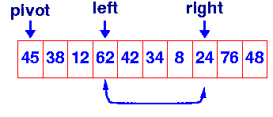

| Data Structures and Algorithms |
| Quick Sort: Partition in place |
Most implementations of quick sort make use of the fact that you can partition in place by keeping two pointers: one moving in from the left and a second moving in from the right. They are moved towards the centre until the left pointer finds an element greater than the pivot and the right one finds an element less than the pivot. These two elements are then swapped. The pointers are then moved inward again until they "cross over". The pivot is then swapped into the slot to which the right pointer points and the partition is complete.
int partition( void *a, int low, int high )
{
int left, right;
void *pivot_item;
pivot_item = a[low];
pivot = left = low;
right = high;
while ( left < right ) {
/* Move left while item < pivot */
while( a[left] <= pivot_item ) left++;
/* Move right while item > pivot */
while( a[right] >= pivot_item ) right--;
if ( left < right ) SWAP(a,left,right);
}
/* right is final position for the pivot */
a[low] = a[right];
a[right] = pivot_item;
return right;
}
|
 |
Note that we have used our ItemCmp function in the partition function. This assumes that there is an external declaration for ItemCmp and that in any one program, we only want to sort one type of object. Generally this will not be acceptable, so the formal specification for quicksort in the Unix and ANSI C libraries includes a function compar which is supplied to qsort when it is called. Passing the function, compar, which defines the ordering of objects when qsort is called avoids this problem in the same way that we passed an ItemCmp function to ConsCollection
Usually, the partition routine will divide the problem into two roughly equal sized partitions. We know that we can divide n items in half log2n times. This makes quicksort a O(nlogn) algorithm - equivalent to heapsort.
However, we have made an unjustified assumption - see if you can identify it before you continue.
|
QuickSort Animation This animation uses the partition in place approach; it was written by Chien Wei Tan |
Please email comments to morris@ee.uwa.edu.au |
Key terms |
|
| Continue on to Quick Sort (cont) | Back to the Table of Contents |